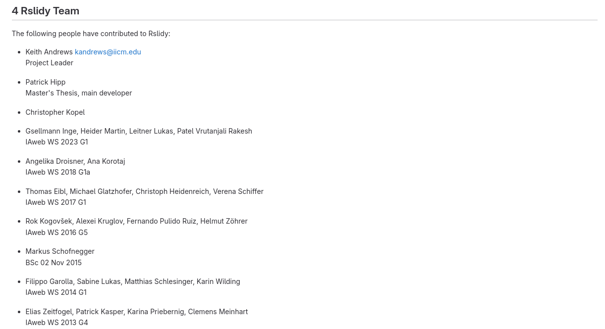

Adapt Mouse Cursor Shape When Hovering Over Image
When hovering over an image that can be opened in the image viewer, the cursor shape should change to a square.
Status: In progress

When hovering over an image that can be opened in the image viewer, the cursor shape should change to a square.
Status: In progress
The first slide should not have a left nav bar and the last slide should not have a right nav bar. They do not exist but the cursor still changes as if they were there. Change this so it looks unmodified from the standard cursor.
Status: DONE
Notes: This fix was implemented into the content.ts file, where the cursor is changed.


When hovering above a nav bar on the left or right side of the screen, the cursor should change to the shape of a left arrow or right error respectively.
Status: quick fix implemented. Most cursor packages do not include a single directional arrow. Current fix is a linked image from wikipedia, as implementing an image does not work.
We did not manage to implement dataURL in the other icons yet as they are referenced as exports and simply changing the definitions of the svgs did not work.
On the first slide the previous button and first button in the toolbar should both be disabled functionally and visually. Same for the next and last buttons on the last slide.
Status: DONE
We now changed the cursor as well as the icons to clearly display a disabled button.

On the title slide the url does not contain #1.
The new url is simply the url of the html file of the presentation + #.
The # is not removed, as it is used in program logic: split(url, "#") at some points.
On running 'npx gulp' the following error happens during the transpile step:
Error: You must provide the URL of lib/mappings.wasm by calling SourceMapConsumer.initialize({ 'lib/mappings.wasm': ... }) before using SourceMapConsumer at readWasm
Status: Done
Works until Node.js version 16.20.2, broken from 17.9.1.
Most suggest downgrading Node.js or using other legacy software. However, the source of the error seems to be that Node.js fixed a security hole.
Fix first issue in package-lock.json by updating source-map version to "^0.7.4" under gulp-typescript.
Second issue after that:
'webpack' errored after 2.94 s
Error: error:0308010C:digital envelope routines::unsupported
at new Hash (node:internal/crypto/hash:68:19)
at Object.createHash (node:crypto:138:10)
This is fixed by updating webpack to the newest version 5.89.0 in package.json
First adaptions made.
Slide creator guide extended.
Group added as contributors in Rslidy's team.
Continous adaptions with new features necessary.
Slide creator guide on GitHub was extended.
More examples in the code snippets.
To be discussed, if additional ReadMe is necessary.


If an image element has its class set as 'disable-image-viewer' the image does not open the image viewer and also not change the mouse shape.
Status: Done

Remove support for S9 slides.
Status: Done
Get rid of inkscape tags and other unnecessary tags within the newly added SVG files.
Status: Done